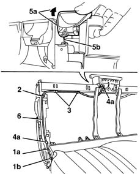

7050A74 Rear seat BACKREST locking/release CABLE - R.R.
- Path
- Procedures > 70 FITTINGS > 7050 REAR SEATS > 7050A rear seat assembly > 7050A74 Rear seat BACKREST locking/release CABLE - R.R.
- Kind
- repair procedure (removal / refitting; the operation number is the code)
- Applies to
- all engines; all production periods
- Interactive page
- https://sloeber94.github.io/elrnDB-lYpsln/en/#/2429655
Applies to: all engines; all production periods
 Removing
Removing
 Refitting
Refitting7050A14 split rear seat assembly - r+r (alternatively)
7050A87 JOINT COVER GUARD for (one), left or right individual seat - R.R. with seat removed
1. Release the flexible cable (1a) from the side retainer (1b).
2. Cut the retaining band.
3. Release the flexible cable from the intermediate retainers.
4. Release the retainers (4a) for the flexible cable outer casing.
5. Lift up the control lever (5a) and disconnect the flexible cable (5b) from the retainer.
6. Keep the flexible cable.

Applies to: all engines; all production periods
Refitting
RemovingCheck that the flexible cable is not damaged.
Connect the flexible cable to the control lever.
Attach the outer casing to the retainers and position the retaining band.
Attach the flexible cable to the side retainer.
7050A87 JOINT COVER GUARD for (one), left or right individual seat - R.R. with seat removed
7050A14 split rear seat assembly - r+r (alternatively)
Topics linked from this page (3)
- 7050A10 rear seat - r+r
- 7050A14 split rear seat assembly - r+r
- 7050A87 JOINT COVER GUARD for (one), left or right individual seat - R.R. with seat removed